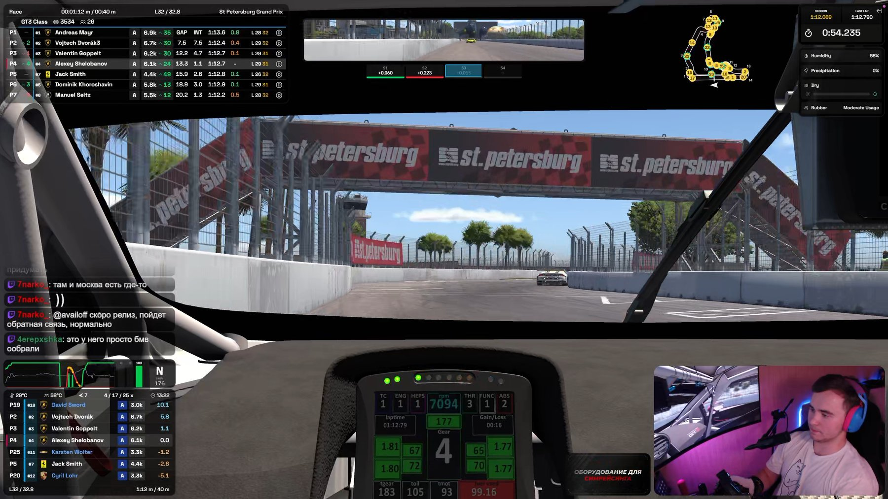

Знай своё место в гонке — в классе и в абсолюте.
01Полная турнирная таблица с разбивкой по классам, интервалами до соперников и лучшими кругами каждого.

TUOverlays
TU Overlays превращает телеметрию iRacing в 27 отдельных окон поверх симулятора: позиция в классе и в абсолюте, отрывы до соперников, топливо, погода, трафик. Каждое окно глубоко настраивается, а Race Control ведёт живой журнал инцидентов сессии — клик по строке перематывает реплей к нужному моменту.
Включайте только то, что нужно в текущей сессии. Настраивайте виджеты под себя.
Полная турнирная таблица с разбивкой по классам, интервалами до соперников и лучшими кругами каждого.

Показывает машины вокруг тебя, интервалы и направление атаки в реальном времени.

Считает расход за круг, остаток топлива и запас до финиша с учётом текущего темпа — подскажет, сколько заливать на пит-стопе.
Показывает срабатывание ABS в реальном времени.

Температура асфальта и воздуха, влажность — видно, когда погода вот-вот изменит темп заезда.

Схема трассы с позициями всех машин в реальном времени — разрывы и группы видно ещё до выезда из поворота.

Газ, тормоз, сцепление и руль с историей последних секунд — вся техника прохождения круга на одном графике.

Клетчатый и другие флаги сессии — крупно, поверх экрана, там, где вы точно их заметите.
Пока другие ищут инциденты, вы их видите сразу. Race Control сам ловит инциденты в реальном времени — вам остаётся щёлкнуть по строке и увидеть повтор.
Съезды с трассы, потеря контроля, аварии и лёгкие касания — всё ловится автоматически по телеметрии, без ручного протоколирования.
Клик по строке — и реплей сам перематывается к нужному моменту, а камера переключается на нужную машину.
Открой карточку водителя — увидишь всю его историю инцидентов за сессию и сумму штрафных очков.
Просмотренные инциденты гаснут сами, важные — отмечаешь флагом и возвращаешься к ним одним кликом.
Вынеси Race Control на второй монитор — удобно для стриминга и совместной работы с со-комментатором.
Замеры на референсной конфигурации: Ryzen 9 9800X3D, RTX 5070TI, 1440p, 30-60 машин на трассе.
Одно ядро, полное стартовое поле.
Медиана по 60 сессиям, отдельный слой.
Каждый виджет захватывается отдельно.
Настрой всё под себя.
Одинаково удобно на любом экране.
Нажмите на карточку, чтобы рассмотреть интерфейс крупно.


Гонщикам, которым важна обстановка вокруг машины: Relative и Fuel дают нужные данные в поле зрения, а Race Control сохраняет каждый инцидент для разбора и протеста после гонки.
Стримерам, которым нужен читаемый эфир: отдельные виджеты можно собрать в собственный layout и настроить под захват в OBS.
TU Overlays — независимый проект, который мы создаём для одной простой цели: сделать максимально удобное, современное и гибкое приложение оверлеев для iRacing.
Нам хотелось не просто сделать ещё один оверлей. Мы хотели создать инструмент, которым действительно хочется пользоваться — и который каждый может настроить под себя.
Идея TU Overlays появилась из собственного опыта. Нам нравилась точность данных в Kapps, но не хватало современного интерфейса и свободы настройки. Многие полезные функции либо вообще отсутствовали, либо были доступны только по подписке в других приложениях. Поэтому мы решили попробовать сделать по-своему: сохранить точность телеметрии, добавить современный дизайн и функции, за которые конкуренты часто просят деньги.
Сейчас TU Overlays только начинает свой путь. Поэтому где-то ещё могут встречаться баги, недоработки или вещи, которые работают не совсем так, как хотелось бы. И это нормально — проект развивается вместе с теми, кто им пользуется.
Именно поэтому нам важна ваша обратная связь.
На Discord-сервере можно не только сообщить об ошибке. Можно предложить новую функцию, рассказать, чего вам не хватает в оверлеях, поделиться своей идеей или просто обсудить, каким должен быть удобный инструмент для iRacing.
TU Overlays создаём не только мы. Вы тоже можете повлиять на то, каким он станет.
Если вам чего-то не хватает — скажите. Если нашли проблему — помогите её разобрать. Если появилась идея — принесите её с собой.
Возможно, именно ваша идея станет следующей функцией TU Overlays.
Сейчас — нисколько. TU Overlays полностью бесплатен.
Мы изначально хотели сделать приложение, в котором полезные функции не прячутся за подпиской. Поэтому все возможности, доступные в текущей версии, можно использовать бесплатно.
TU Overlays работает на Windows 10 и Windows 11 (64-bit).
Версий для macOS и Linux сейчас нет. Поскольку сам iRacing официально работает только на Windows, мы пока сосредоточились именно на этой платформе.
Мы старались сделать так, чтобы оверлеи не мешали главному — самой гонке.
В наших тестах медианное падение составило около 3,4 FPS на полной стартовой решётке. Оверлеи работают отдельными окнами поверх симулятора и не вмешиваются напрямую в его рендер-цикл.
Разумеется, результат может отличаться в зависимости от вашего ПК и настроек.
Да. Изначально мы учитывали стримеров при разработке.
В этом и есть одна из главных идей TU Overlays.
Вы можете менять положение и размер виджетов, масштаб, прозрачность, цвета классов, отображаемые колонки, количество строк и единицы измерения.
Не нравится стандартный вариант? Сделайте свой.
Да.
Настройки сохраняются в файл профиля. Его можно отправить другу, поделиться им в Discord или просто сохранить как резервную копию.
А если кто-то уже собрал удобный сетап — его можно импортировать буквально в несколько кликов.
Нет.
Мы не хотим добавлять лишние регистрации и аккаунты там, где они не нужны. Приложение работает с телеметрией локально и не отправляет её на наши серверы.
Для работы нужен только действующий аккаунт iRacing с активной подпиской.
Сейчас доступно 27 независимых виджетов, и каждый можно включать, перемещать, масштабировать и настраивать отдельно:
И это только то, что есть сейчас. TU Overlays продолжает развиваться, поэтому список будет меняться вместе с проектом и вашими идеями.
Race Control — это отдельная часть TU Overlays, которая помогает разбирать происходящее на трассе.
Он автоматически отслеживает инциденты по телеметрии: столкновения, вылеты и потерю контроля, собирает их в журнал и позволяет быстро перейти к нужному моменту реплея.
Можно посмотреть историю инцидентов конкретного пилота, отметить важные события и вернуться к ним позже.
Особенно полезно после гонки — когда нужно понять, что именно произошло, а не вспоминать по памяти.
Расскажите нам. Это действительно важно.
TU Overlays пока находится в начале своего пути, и мы не пытаемся делать вид, что проект уже идеален. Где-то может что-то работать не так, где-то может не хватать нужной настройки — именно поэтому нам нужна обратная связь.
Присоединяйтесь к Discord, рассказывайте о проблемах, предлагайте идеи и делитесь своим опытом.
Возможно, функция, которую вы предложите сегодня, уже завтра появится в TU Overlays.
Напишите нам в Discord.
Не нашли ответа — значит, возможно, этот вопрос стоит добавить в FAQ. А если вы предложите что-то, о чём мы сами ещё не подумали, — ещё лучше.
TU Overlays создаётся для сообщества iRacing. Поэтому нам важно не только рассказывать вам о проекте, но и слушать вас.
Установка займёт минуту. Кнопка «Скачать» разблокируется автоматически в момент релиза — обновлять страницу не нужно.
TU Overlays уже можно скачать!
В честь релиза дарим готовый пресет оверлеев Shelik — тот самый сетап виджетов, который вы видели в галерее. Заберите файл, пока действует акция.
Скачать пресет ShelikИмпортируйте файл в настройках TU Overlays. Акция действует только 23 августа.